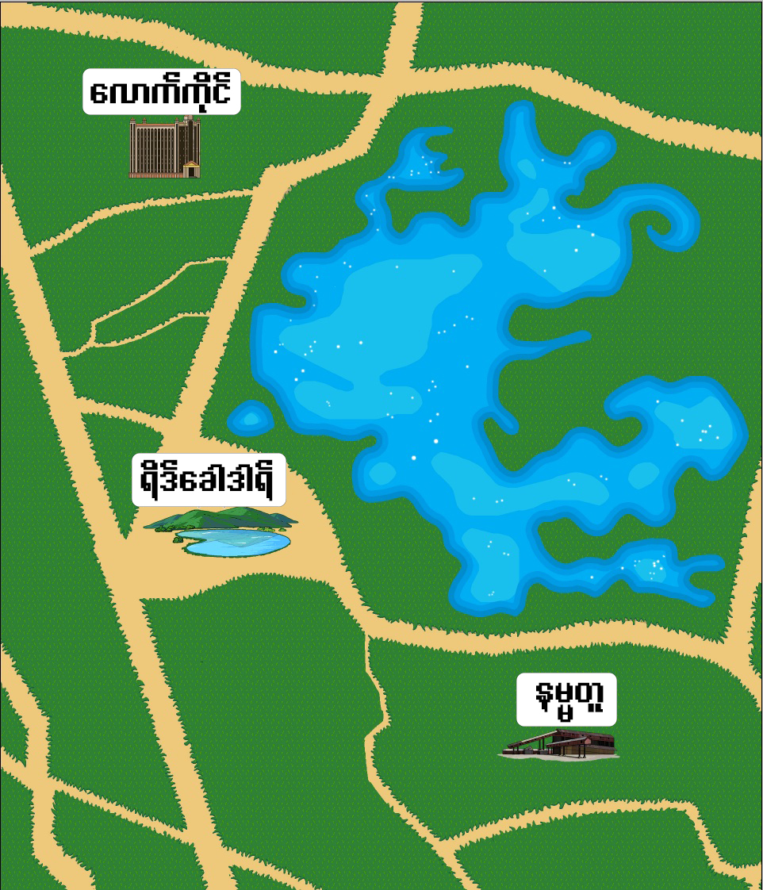

ရိဒ်ခေါဒါရ်
- နိုင်ငံတော်သမ္မတ၏ နွေဦးတော်လှန်ရေး ၃နှစ်ပြည့် မိန့်ခွန်း
ရိဒ်ခေါဒါရ်သို့သွားရန် နှိပ်ပါ။
နမ္မတူ (နွေဦးပြတိုက်)
- Burmese Civial War Museum
- မြန်မာ့ ပြည်တွင်းစစ်၏ သမိုင်းမှတ်တမ်း ဆွေးနွေးပွဲ
ဆွေးနွေးမည့်သူများ။ ။ကိုသက်ဆွေဝင်း၊ ကိုဖိုးသကြန်)
10 AM to 11AM (Myanmar Standard Time)
နမ္မတူသို့သွားရန် နှိပ်ပါ။
လောက်ကိုင်
- သောင်ရင်း သုခုမ အဖွဲ့၏ ဖျော်ဖြေရေး အစီအစဉ်
10 AM to 11AM (Myanmar Standard Time)
- နွေဦးတော်လှန်ရေး ၃နှစ်ပြည့် အောင်မြင်မှုများ ဆွေးနွေးပွဲ
ဆွေးနွေးမည့်သူများ။ ။ကိုသက်ဆွေဝင်း၊ ကိုဖိုးသကြန်)
10 AM to 11AM (Myanmar Standard Time)
လောက်ကိုင်သို့သွားရန် နှိပ်ပါ။
အိုင်လိုင်း လူထုတွေ့ဆုံပွဲမှာ အကူအညီ တစ်စုံတစ်ရာ လိုအပ်ပါက Helper လေးတွေ မေးမြန်း အကူအညီ တောင်းနိုင်ပါတယ်။ အောက်က Wokka ပုံလေးတွေကတော့ Helper လေးတွေပါပဲ။